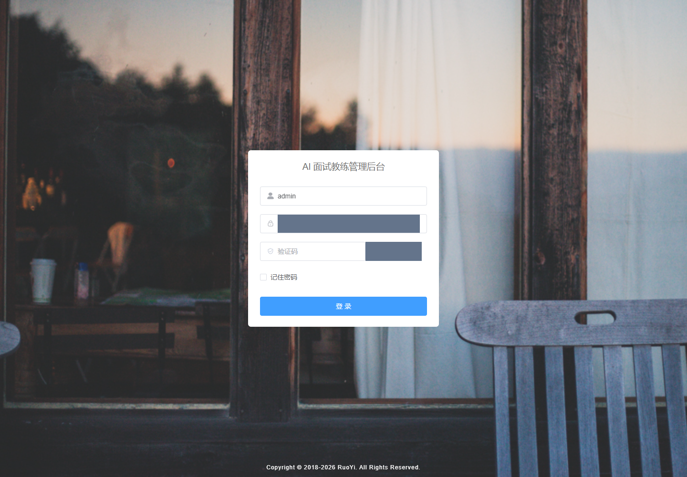

并行隔离续验
本轮仅执行只读检查：未修改业务源码、公共配置、数据库或缓存；未构建、重启、迁移、创建工作树。样本标识 DEMO-LOCAL 不能证明数据库隔离。公共 JAR 在 JVM 启动后被修改，不能把磁盘 SHA256 当作运行版本。
进程/产物/配置标识与哈希 · 源码证据匹配及公开只读请求。配置标识不是数据库实际连接证明，后台 Worker 配置启用也不等于队列隔离成立。
Python health=ok、demo=true；前端代理 captcha 请求返回 code=200，只证明这些只读请求有响应，不代表 Java/Python 业务闭环通过。10/11 源码摘录匹配，公共认证源码变化已记录；本轮不归因于具体任务。
当前环境与采证边界
用户在本轮中将默认验收方式更新为 Codex 内置浏览器，已按新规则补查 IAB。商品页返回验证码登录页，正在等待用户完成登录。内置浏览器内核/模式未知，仅本任务标签隔离已确认。补查记录。下方独立无头浏览器记录与截图为切换前历史证据。
对象：当前工作区未提交版本。前端 5173 / Java 8081 / Python 8100；当前演示数据为 DEMO-LOCAL。没有导入用户日常浏览器资料。
工具：已安装 Playwright；Chrome 153.0.8010.53；显式 headless=true；视口 1440×1000；新建隔离上下文。访问商品页跳转登录，captchaEnabled=true，未解答验证码、未绕过登录。
采证时间：2026-09-26T01:25:27.377Z。Network 记录见 浏览器核查.json，仅能说明登录页请求；不代表业务 API 全部正常。

实际登录阻塞画面：只支持截图缺口的原因，不替代 REV-02～06 的业务截图。
REV-00 · 环境归属与运行版本绑定 Blocked
- 输入
- 单一工作树、5173/8081/8100 进程、公共 JAR 与非秘密配置标识
- 核查步骤
- 核对 worktree/HEAD/差异数、监听 PID、进程启动时间、文件 SHA256、数据库/缓存配置及摘录匹配
- 预期
- 任务环境专属，前后端版本与数据范围可绑定，验收不受其他任务修改影响
- 实际
- 仅 1 个工作树，4014 条未提交状态。前端 PID 4364，Java PID 30752，Python PID 30236。Java 08:59 启动，磁盘公共 JAR 09:23 修改，无法证明运行加载版本。数据库配置 localhost:3306/ry-vue，缓存配置 localhost:6379/0，无专属隔离证明。10/11 源码摘录仍匹配；公共 TokenService 摘录已变化。
- 遗留与复验
- 先明确共享环境停写/版本冻结窗口，或在另行授权范围内建立专属工作树、固定产物与数据资源；本轮不迁移、不重启、不修补其他任务修改。
- 页面或操作入口
- D:/2025Ai/26-05-23/java-workspace
截图状态：不适用。不适用：源码/进程及记录核查。
证据：源码摘录（环境归属核查.json / 续验检查.json） · 浏览器与 Network 记录。结果日期：2026-09-26；本轮无修复复验。
REV-01 · 电商来源与样本 Fail
- 输入
- 上轮 DEMO-LOCAL 样本和生成脚本
- 核查步骤
- 核对样本定义、写入方式与来源证据
- 预期
- 真实电商商品可追溯到 URL、规格、采集时间及导入批次
- 实际
- 脚本定义 4 个合成商品并直接 INSERT 商品、库存和成功状态批次；每 SKU 演示库存为 50。这些批次不是页面上传 Excel 的执行证据。没有本轮真实电商采集/导入证据。
- 遗留与复验
- 需采集真实商品并保留原始证据，通过实际页面导入；合成库存和改价样本单独标记。
- 页面或操作入口
- ruoyi-backend/ruoyi-fashion/scripts/seed_local_demo.py
截图状态：不适用。不适用：源码/进程及记录核查。
证据：源码摘录（seed） · 浏览器与 Network 记录。结果日期：2026-09-26；本轮无修复复验。
REV-02 · 商品 Excel 导入 Blocked
- 输入
- 现有导入页面、CSV 模板、CSV/XLSX 解析代码
- 核查步骤
- 检查上传、预览、确认及模板下载代码；尝试浏览器进入；规范更新后切换内置浏览器
- 预期
- 真实样本 Excel 经预览、发布、刷新回读，与输入逐行一致
- 实际
- 静态核查存在 .csv/.xlsx 上传、预览和确认 API；页面只提供 CSV 模板，API 有 mapping 参数但页面没有列映射交互。模板普通链接与后端请求头鉴权存在接法疑点，待联机复现。独立浏览器及后续内置浏览器登录均受验证码阻塞，真实商品 Excel 上传/发布未执行。 本次续验未执行共享环境业务操作：公共 JAR 修改晚于运行进程启动，版本绑定失败。 上轮 TokenService 源码证据已经变化，模板下载鉴权疑点仅保留为历史待复现项，不作为当前版本已确认缺陷。
- 遗留与复验
- 补 XLSX 模板、列映射、可追溯历史和下载结果；复现并修正模板下载；按 FIX-02 真正导入。
- 页面或操作入口
- http://127.0.0.1:5173/fashion/import
截图状态：受阻（共享版本未绑定；登录待完成）。业务页未截图：共享环境运行版本无法绑定，且本任务 IAB 标签仍在登录页。历史截图不作为本次业务通过证据。
证据：源码摘录（import/template/auth） · 浏览器与 Network 记录。结果日期：2026-09-26；本轮无修复复验。
REV-03 · 服装字段完整性与维护 Fail
- 输入
- 商品表、商品列表与 15 个新增表单字段
- 核查步骤
- 核对字段、详情/编辑入口及筛选条件
- 预期
- 服装核心属性可录入、查看、编辑、筛选，颜色尺码独立维护
- 实际
- 已有来源、SKU、款号、名称、品类、颜色、尺码、尺码制式、单位、季节、品牌、材质、京东 ID/URL。缺少结构化人群、面料成分、版型、领型、袖长、厚薄、弹力、裤型等。列表操作主要为 AI 属性建议、改名、上下架，缺完整商品详情/编辑。tags JSON 不等于这些字段可维护。 本次续验未执行共享环境业务操作：公共 JAR 修改晚于运行进程启动，版本绑定失败。
- 遗留与复验
- 按品类补字段，并同时贯通详情、编辑、查询、模板和选品，见 FIX-01/02。
- 页面或操作入口
- http://127.0.0.1:5173/fashion/product
截图状态：受阻（共享版本未绑定；登录待完成）。业务页未截图：共享环境运行版本无法绑定，且本任务 IAB 标签仍在登录页。历史截图不作为本次业务通过证据。
证据：源码摘录（product/schema） · 浏览器与 Network 记录。结果日期：2026-09-26；本轮无修复复验。
REV-04 · 价格 Excel 更新 Blocked
- 输入
- 现有价格导入面板及严格范围全量服务
- 核查步骤
- 检查范围、差异、发布、恢复实现；尝试页面验证
- 预期
- 两轮实际 Excel 更新有新旧价格对账、库存不变及错误批次不生效证据
- 实际
- 静态实现支持来源＋品类范围、业务时间、差异预览、发布和当前成功批次恢复；缺少便于重新打开旧批次的完整历史操作入口。真实电商样本的两轮改价和数据库回读未执行，浏览器登录受阻（已按最新规范补查内置浏览器）。 本次续验未执行共享环境业务操作：公共 JAR 修改晚于运行进程启动，版本绑定失败。
- 遗留与复验
- 不能把现有代码或 Mock 测试说成实际改价验收通过；按 FIX-03 补全过程。
- 页面或操作入口
- http://127.0.0.1:5173/fashion/price-import
截图状态：受阻（共享版本未绑定；登录待完成）。业务页未截图：共享环境运行版本无法绑定，且本任务 IAB 标签仍在登录页。历史截图不作为本次业务通过证据。
证据：源码摘录（price_stock/mock） · 浏览器与 Network 记录。结果日期：2026-09-26；本轮无修复复验。
REV-05 · 独立库存中心与多尺码 SKU Fail
- 输入
- fq_product、fq_stock、库存导入页面和业务页面目录
- 核查步骤
- 检查商品颜色尺码键、仓库数量、库存管理入口
- 预期
- 独立库存中心能查看、筛选各颜色尺码及仓库，并追溯更新批次
- 实际
- fq_product 已有颜色/尺码 SKU 唯一约束，fq_stock 已按 product_id＋warehouse_code 独立保存 available_qty、as_of 和批次。前端目前只有库存全量导入页，缺独立库存列表和尺码矩阵；上轮 4 个合成 SKU 未覆盖多尺码、多仓更新。 本次续验未执行共享环境业务操作：公共 JAR 修改晚于运行进程启动，版本绑定失败。
- 遗留与复验
- 复用现有库存表，补分页查询、矩阵、缺货/时效筛选、历史入口，并进行尺码和仓库隔离复验。
- 页面或操作入口
- http://127.0.0.1:5173/fashion/stock-import
截图状态：受阻（共享版本未绑定；登录待完成）。业务页未截图：共享环境运行版本无法绑定，且本任务 IAB 标签仍在登录页。历史截图不作为本次业务通过证据。
证据：源码摘录（schema/price_stock） · 浏览器与 Network 记录。结果日期：2026-09-26；本轮无修复复验。
REV-06 · 方案中心与选品可用性 Fail
- 输入
- 方案列表、工作台、demo 排序器和上轮演示 Run 记录
- 核查步骤
- 核对列表进入工作台、候选展示、生成/替换/锁定与尺码分配
- 预期
- 销售从方案直接完成真实商品选品、看图、筛选、加入/移除、换款及尺码分配后保存回读
- 实际
- 代码已有“工作台”跳转、生成搭配、采用、锁定、替换。候选卡展示名称/颜色/价格/数量，未展示商品图；需求输出直接显示 JSON，缺少完整人工选品操作。当前 demo 主要按价格排序，不代表真实 AI 选品。上轮成功 Run 只证明演示调用链，不能证明当前业务体验合格。 本次续验未执行共享环境业务操作：公共 JAR 修改晚于运行进程启动，版本绑定失败。
- 遗留与复验
- 方案入口和业务交互需要补齐；先让人工选品完整可用，再独立验证 AI 辅助质量。
- 页面或操作入口
- http://127.0.0.1:5173/fashion/quote
截图状态：受阻（共享版本未绑定；登录待完成）。业务页未截图：共享环境运行版本无法绑定，且本任务 IAB 标签仍在登录页。历史截图不作为本次业务通过证据。
证据：源码摘录（quote/workbench/demo） · 浏览器与 Network 记录。结果日期：2026-09-26；本轮无修复复验。
建议的业务流程
电商样本 → 商品 Excel 导入 → 属性/图片核对 → 价格 Excel 更新 → 库存 Excel 更新 → 库存中心核对尺码 → 方案选品/组合/尺码数量 → 报价。
商品来源可以是真实电商；精确库存如未取得，只能标未知或使用明确标识的合成测试值。不能把页面“有货”写成虚构的真实库存数量。
分阶段实施计划 · 待用户核对
以下由唯一任务清单第 15 节生成；实施状态均为 WaitingForApproval，原因是用户明确要求先核对计划再修改。
2026-09-26 分阶段整改计划（待用户核对）
本节是本次整改唯一任务入口。用户已提出目标，但明确要求先汇报、核对计划再修改；本轮交付现状复核和计划，不提前改变业务模型。当前建议沿用 Java/MySQL 权威、现有商品/库存/批次表和共享管理端，通过兼容字段迁移及页面补齐实施。若确需增表，先在数据库设计中写明新增必要性和兼容方案，不直接复用已否决的 44 表设计。
### 15.1 用户实际操作流程
采集电商公开商品与规格 → 保存来源 URL、平台商品/SKU 标识、采集时间和原始样本 → 整理商品 Excel → 导入预览/修正/确认 → 商品详情核对属性和图片 → 价格 Excel 预览/确认 → 库存 Excel 预览/确认 → 库存中心查看各颜色尺码可售量 → 方案选择商品、分配尺码数量、组合搭配 → 核对金额和库存 → 保存/报价。
商品、价格、库存采用三份 Excel，导入各自更新对应数据。资料导入不覆盖价库，价格不覆盖库存；库存以 SKU＋仓库为单位。价格/库存沿用“选定范围严格全量”：缺行阻断、明确 0 为缺货、旧时间拒绝覆盖、发布前再校验并发变化。任何引入增量模式的需求另行核对，避免无意改变现行规则。
### 15.2 服装字段建议（待同步至规格与数据库设计）
| 分组 | 拟支持字段与展示 | 存储/维护原则 |
|---|---|---|
| 来源与基础 | 来源平台、店铺/供应商、平台商品 ID、平台 SKU ID、商品链接、采集时间、品牌、款号、名称、三级品类、上市年份/季节、状态 | 保留原始值和标准值；扩展通用平台字段，兼容现有京东字段 |
| 服装属性 | 适用人群/性别、风格、适用场景、面料成分及比例、里料、厚薄、弹力、版型、领型、袖型/袖长、衣长、图案、工艺；下装补充裤型、裤长、腰型 | 按品类展示；不知道的属性标未知，不凭图片编造面料成分 |
| 颜色尺码 SKU | 内部 SKU、平台 SKU、颜色编码/名称、尺码编码/名称、尺码制式、条码（可选）、销售单位、启停状态 | 一个颜色＋一个尺码对应独立 SKU；款式/款色分组展示，批量生成仅限真实规格 |
| 尺码说明 | 尺码表、胸围/肩宽/衣长/腰围/臀围等实测尺寸、测量单位、来源说明 | 与销售尺码分开；按品类适用，不要求所有字段必填 |
| 图片 | 主图、颜色对应图、细节图、尺码图、原始图片来源、人工确认状态 | 图片与款色关联，可预览可追溯；不把示意图当商品实拍 |
| 价格 | 每 SKU 当前销售价、币种、含税口径、更新时间、来源批次；电商展示价及采集时间 | 电商观察价与本系统销售价区别展示；首期仍是一 SKU 一套当前销售价 |
| 库存 | 每 SKU、仓库、可售数量、业务时间、导入批次、核实来源、时效状态 | 用现有独立库存表；不默认增加订单、预占、入出库等未提出的仓储业务 |
基础身份与 SKU 规则为必填；服装属性按品类分“选品必需/可选”，缺失可保存草稿，选品时明确排除原因。完整性体现在录入、详情、编辑、筛选、导入、导出和候选展示共同支持，不能只在数据库加列。
### 15.3 阶段、实施范围与退出条件
| ID / 顺序 | 交付内容 | 实施落点与依赖 | 可判定的退出条件 | 状态 |
|---|---|---|---|---|
| FIX-01 数据口径与电商样本 | 确认上述字段、维护规则和模板；采集公开电商服装，建议 20 个款式、至少 60 个真实存在的颜色尺码 SKU；形成原始来源清单、图片关联和标准化样本 | 商品规格/数据库设计、少量采样脚本、来源清单；先完成兼容设计 | 每条样本可回到来源；平台 SKU 不编造；缺失属性明确标记；商品真值与合成价格变更/库存样本分开标识 | WaitingForApproval |
| FIX-02 商品中心与 Excel 导入 | 服装详情、完整编辑、属性筛选、款色分组与尺码矩阵；下载真正 XLSX 模板、可操作的列映射、行错下载、差异预览、结果与批次查询 | Java 商品/导入 API、Vue 商品/导入页、兼容迁移；依赖 FIX-01 | 真实样本从页面上传→预览→发布→刷新回读；重复导入不重复建 SKU；前导零保留；错误文件不部分入库；重新登录后仍能查批次 | WaitingForApproval |
| FIX-03 价格 Excel 更新 | 当前价列表与来源、范围说明、涨跌差异、导入历史/恢复入口；修复模板下载鉴权问题 | 现有价格导入和商品价格字段；依赖 FIX-02 | 第一版价格入库，再导入改价版；每 SKU 旧/新值与总数一致；库存不变；缺行、负数、未知 SKU、旧时间被拒绝；恢复可回读 | WaitingForApproval |
| FIX-04 独立库存中心 | 新增“库存中心”菜单和查询页；按款/颜色查看尺码库存矩阵，支持仓库、SKU、缺货/时效筛选；独立库存 XLSX 更新、批次追溯 | 复用 fq_stock，新增分页/矩阵读取 API，复用更新事务与明细；依赖 FIX-02 | 同款不同颜色尺码数量互不串；至少 2 个测试仓库隔离；正常、0、缺行、负数、小数、未知 SKU、旧时间、重复/并发批次逐项验证；价格不变 | WaitingForApproval |
| FIX-05 可用的方案选品 | 从方案列表直接进入“选品”；需求表单、带真实图的候选列表、属性/预算/库存筛选、人工加入/移除商品、1–4 品类组合、换色换款、尺码数量分配与保存回读 | 方案页、工作台、Java 候选/组合 API；依赖 FIX-03/04 | 使用导入的商品完成新建方案→选品→分配→保存→重新打开；缺码/缺货明确提示；换款后图片/价格/库存同步；不依赖 demo 自动生成才能手工完成选品 | WaitingForApproval |
| FIX-06 全链路复验与逐项报告 | 完整走电商样本→商品导入→价格两次更新→库存两次更新→方案选品→报价；保存文件、批次、前后回读、页面截图、错误场景、HTML 报告 | 使用 FIX-01 同一来源样本；Codex 内置浏览器，本任务独立标签和专用测试范围；依赖 FIX-01～05 | 每条 AC 有真执行证据，截图回读、数据对账；失败/阻塞保留；用户核对后决定接受。真实 AI 质量若未接入则明确未验证，不能用 demo 替代 | WaitingForApproval |
电商公开页通常不能证明仓库精确可售数量：采集到“有货”只记录可售状态；没有精确数量时，库存导入使用明确标识的合成测试值，例如同款 S=12、M=20、L=0，再更新成 S=8、M=15、L=6，用来验证尺码隔离和更新。此时商品属性来源是真实电商，库存是合成测试，报告分别注明。电商展示价也只是采集时点观察值，更新测试的改价版明确标记合成变化。
小规模采集优先公开可访问页面并保存证据；遇平台登录/访问限制时记录缺口，改用用户提供的商品链接、授权导出或其他可访问电商源，不绕过限制、不声称已拿到未取得的数据。
### 15.4 验证、兼容与核对项
修改前备份受影响的本机业务数据，新增字段保留旧 SKU/报价引用，模板增加明确版本与兼容映射；迁移先在隔离库演练。失败停止发布新批次，保留原始文件与错误明细，恢复通过现有批次机制，不覆盖共享库。每阶段运行对应 Java/前端定向检查，再走真实页面与 MySQL 回读，不以 Mock 浏览器测试替代联机验证。
用户本次核对重点：上述服装字段是否满足经营品类；样本量是否合适；先完成商品/价格/独立库存，再做方案选品的顺序是否认可。以上是建议默认值，待本次计划核对后落实；不要求用户处理 Agent 版本或内部运行参数。
交付检查与缺口
清单与报告的 7 个 ID、结果和截图状态已做静态一致性检查，本地证据链接已校验存在。登录阻塞截图已回读。检查记录。
报告视觉检查未执行：内置浏览器安全策略拒绝本地 file:// 报告 URL，未通过其他浏览器或 HTTP 绕过。5 项业务页截图待完成环境版本绑定及内置浏览器登录后补齐。当前交付为整改前复核与计划，不宣称业务验收执行完整。